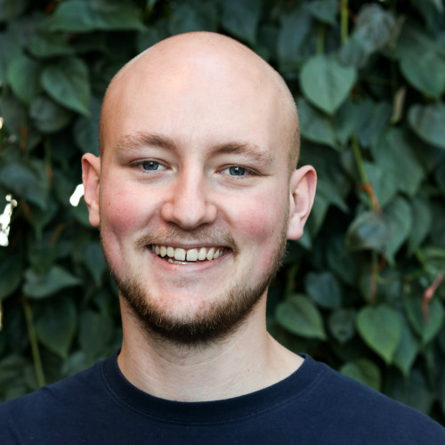

Mads
Mads was born on 19 June 1995 in Paris as the only child of Jean-Baptiste Sartre, an officer of the French Navy, and Anne-Marie (Schweitzer). When Sartre was two years old, his father died of an illness, which he most likely contracted in Indochina. Anne-Marie moved back to her parents' house in Meudon, where she raised Sartre with help from her father Charles Schweitzer, a teacher of German who taught Sartre mathematics and introduced him to classical literature at a very early age. When he was twelve, Sartre's mother remarried, and the family moved to La Rochelle, where he was frequently bullied, in part due to the wandering of his blind right eye (sensory exotropia).
